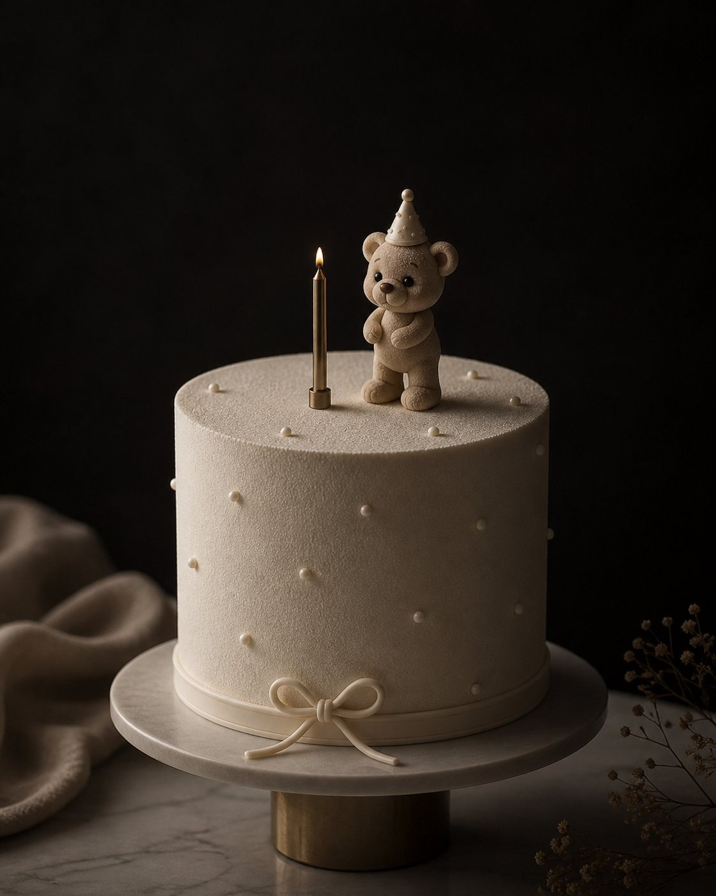
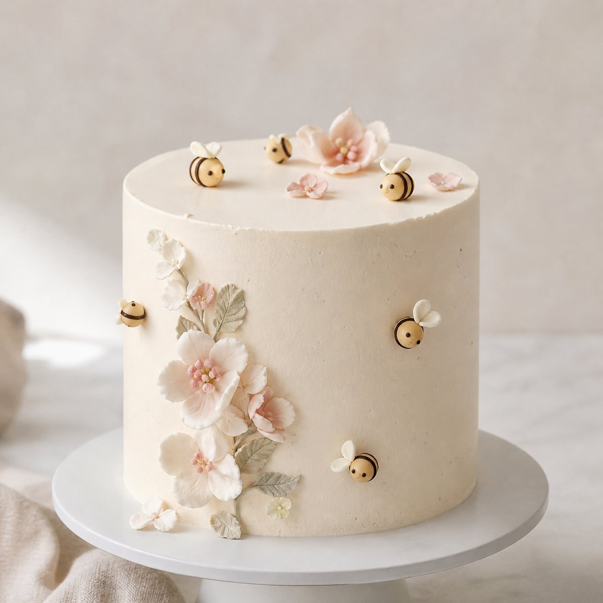

Para casaPré-encomenda
Caixa Casa Clo
Selecção de doces artesanais da semana, preparada para partilhar ou oferecer.
Cada peça é preparada por encomenda, à mão, em Lisboa e Margem Sul. Escolha por categoria ou contacte-nos para algo à medida.
Bolos, caixas e sobremesas pensados para almoços de família, jantares íntimos e momentos a oferecer.
Selecção de doces artesanais da semana, preparada para partilhar ou oferecer.

Uma sobremesa familiar, pensada para almoços demorados e mesas cheias.

Doces embalados com delicadeza para visitas, aniversários, agradecimentos ou datas especiais.
Bolos com figuras moldadas à mão, paletas suaves e detalhes que tornam o dia memorável — pensados para os mais pequenos e para as suas datas marcantes.

Bolos pensados para os mais pequenos — figuras moldadas à mão, paletas suaves e detalhes do tema da festa.

Bolos para baptizados, comunhões e celebrações de nascimento — discretos, elegantes, com o detalhe certo para o dia da família.

Bolos com flores trabalhadas à mão e pequenas figuras — para festas de jardim, primavera, aniversários de menina.
Para casamentos, eventos privados e datas pensadas ao detalhe — peças centrais e mesas doces preparadas em coordenação com a estética do dia.

Bolos de cerimónia em vários andares, com flores trabalhadas à mão e detalhes coordenados ao tom da celebração.

Selecção completa de doces para casamentos, baptizados, comunhões, aniversários e festas privadas.

Ursos, figuras e pequenas peças moldadas em chocolate para oferecer ou completar uma festa.

Doces personalizados com iniciais, cores ou detalhes pensados para o evento.